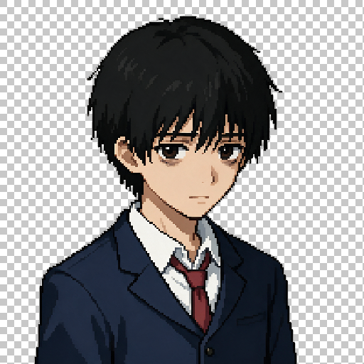
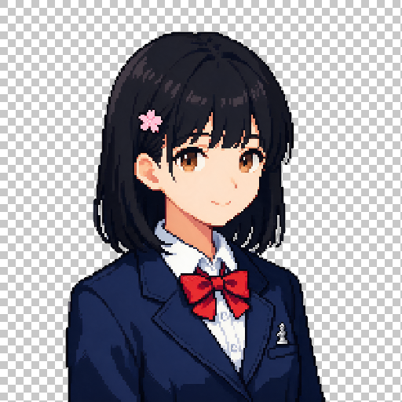

Seedream 5.0 Pro 预览图
模型: doubao-seedream-5-0-pro-260628 |
尺寸: 2048×2048 |
方案: Pro 文生图(纯白背景) + rembg 抠图(alpha 二值化 + 边缘羽化)
林夜 (男主) — neutral base
② 透明背景抠图 (棋盘格)

人设: 17岁高二男生，短黑发，聪明叛逆但内心善良，深棕色眼眸，校服西装配红领带
透明度统计: 完全不透明 33.7% / 完全透明 65.7% / 半透明(边缘) 0.57%
陈默 (女主) — neutral base
② 透明背景抠图 (棋盘格)

人设: 17岁高二女生，齐肩黑直发+左侧小发夹，杏眼温和棕瞳，温柔内向，校服西装配红领结+棋子胸针
透明度统计: 完全不透明 45.1% / 完全透明 54.2% / 半透明(边缘) 0.72%
预览说明： 当前为 base 立绘(文生图)，用于建立人物形象基线。
确认后将以这两张 base 作为图生图参考，低 denoise 重绘其他表情变体(微笑/惊讶/悲伤/思考等)，
保证人物形象一致性。透明 PNG 可直接用于 RPG 游戏立绘层。